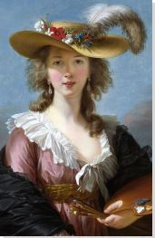

The painting appears, after cleaning, to be an autograph replica of a picture, the original of which was painted in Brussels in 1782 in free imitation of Rubens's 'Chapeau de Paille', which LeBrun had seen in Antwerp. It was exhibited in Paris in 1782 at the Salon de la Correspondance. LeBrun's original is recorded in a private collection in France.
$700
Product Details
| Date: | 1782 |
|---|---|
| Medium: | Oil on canvas |
| Dimensions: | 98cm × 71cm |
| Home: | National Gallery, London |
| Genres: | Realism, Rococo |
| Subjects: | People, Arts |